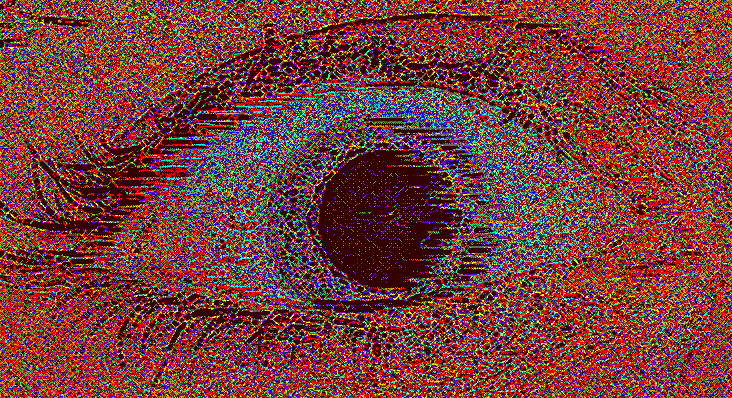

【The law of the ghost bed】
1. 90% probability of sleeping from 9 to 12 PM
2.After 12 o 'clock sleep ghost press probability 5%
3. At least three rounds of screaming in your ear each time
(broad, sharp, explosive, repeating a sentence and then
the pitch of the last word gets higher and suddenly screams)
4. The screams get louder
5. The longest time - estimated 5-6 rounds
6. Open your eyes and see something strange
